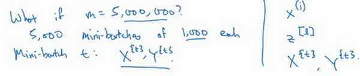

改善算法
Table of Contents
接下来将学习优化算法，这能让神经网络运行得更快
机器学习的应用是一个高度依赖经验的过程，伴随着大量迭代的过程，需要训练诸多模型，才能找到合适的那一个，所以，优化算法能够帮助快速训练模型 其中一个难点在于，深度学习不能在没有大数据领域发挥最大的效果，而在巨大的数据集基础上进行训练速度很慢。因此，会发现，使用快速的优化算法能够大大提高效率
Mini-batch 梯度下降
首先来谈谈 mini-batch 梯度下降法

向量化能够有效地对所有个样本进行计算，允许处理整个训练集，而无需某个明确的公式。所以要把训练样本放入巨大的矩阵 \(X\) 当中去， \(X=[x^{(1)} x^{(2)} x^{(3)} \ldots x^{(m)}]\) ，\(Y\) 也是如此，\(Y=[y^{(1)} y^{(2)} y^{(3)} \ldots y^{(m)}]\) ，所以 \(X\) 的维数是 \((n_x, m)\) ， \(Y\) 的维数是 \((1, m)\) ，向量化能够相对较快地处理 \(m\) 所有个样本
如果m 很大的话，处理速度仍然缓慢。比如说，如果 m 是500万或5000万或者更大的一个数 在对整个训练集执行梯度下降法时，要做的是，必须处理整个训练集，然后才能进行一步梯度下降法 然后需要再重新处理500万个训练样本，才能进行下一步梯度下降法 所以如果在处理完整个500万个样本的训练集之前，先让梯度下降法处理一部分，算法速度会更快
可以把训练集分割为小一点的子集训练，这些子集被取名为 mini-batch ，假设每一个子集中只有1000个样本，那么把其中的 \(x^{(1)}\) 到 \(x^{(1000)}\) 取出来，将其称为第一个子训练集，然后再取出接下来的1000个样本，从 \(x^{(1001)}\) 到 \(x^{(2000)}\) ，然后再取1000个样本，以此类推。
- 把 \(x^{(1)}\) 到 \(x^{(1000)}\) 称为 \(X^{\{1\}}\)
- 把 \(x^{(1001)}\) 到 \(x^{(2000)}\) 称为 \(X^{\{2\}}\)
- 如果训练样本一共有500万个，每个mini-batch都有1000个样本，也就是说，有5000个mini-batch，因为5000乘以1000就是500万，所以最后得到的就是 \(X^{\{5000\}}\)

对 \(Y\) 也要进行相同处理，相应地拆分 \(Y\) 的训练集，所以这是 \(Y^{\{1\}}\) ，然后从 \(y^{(1001)}\) 到 \(y^{(2000)}\) ，这个叫 \(Y^{\{2\}}\) ，一直到 \(Y^{\{5000\}}\)

mini-batch的数量 \(t\) 组成了\(X^{\{t\}}\) 和 \(Y^{\{t\}}\) ，这就是1000个训练样本，包含相应的输入输出对

之前使用了上角小括号 \((i)\) 表示训练集里的值，所以 \(x^{(i)}\) 是第 \(i\) 个训练样本。用了上角中括号 \([l]\) 来表示神经网络的层数，\(z^{[l]}\) 表示神经网络中第 \(l\) 层的 \(z\) 值，现在引入了大括号 \(t\) 来代表不同的mini-batch，所以有 \(X^{\{t\}}\) 和 \(Y^{\{t\}}\)
batch梯度下降法指的是之前讲过的梯度下降法算法，就是同时处理整个训练集 这个名字就是来源于能够同时看到整个batch训练集的样本被处理 相比之下，mini-batch梯度下降法，指的是每次同时处理的单个的 mini-batch , 而不是同时处理全部的 X 和 Y 训练集 那么究竟mini-batch梯度下降法的原理是什么？
在训练集上运行mini-batch梯度下降法，运行 \(for \quad t = 1 \ldots 5000\) ，因为有5000个各有1000个样本的组，在for循环里要做得基本就是对 \(X^{\{t\}}\) 和 \(Y^{\{t\}}\) 执行一步梯度下降法